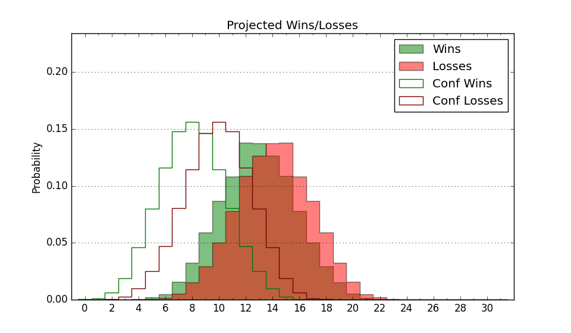

| Home | Game Probabilities | Conferences | Preseason Predictions | Odds Charts | NCAA Tournament |
| City: | Philadelphia, Pennsylvania | |
| Conference: | American (5th)
| |
| Record: | 10-8 (Conf) 16-15 (Overall) | |
| Ratings: | Comp.: 5.4 (121st) Net: 5.4 (121st) Off: 105.2 (139th) Def: 99.8 (110th) SoR: 0.1 (127th) |
| Remaining | ||||||
|---|---|---|---|---|---|---|
| Date | Opponent | Win Prob | Pred. | |||
| Previous | Game Score | |||||
| Date | Opponent | Win Prob | Result | Off | Def | Net |
| 11/7 | Wagner (331) | 93.7% | L 73-76 | -13.2 | -21.7 | -34.9 |
| 11/11 | Villanova (56) | 42.7% | W 68-64 | -3.5 | 9.2 | 5.7 |
| 11/15 | Vanderbilt (81) | 50.4% | L 87-89 | 8.7 | -12.0 | -3.3 |
| 11/18 | (N) Rutgers (39) | 23.8% | W 72-66 | 5.9 | 11.4 | 17.3 |
| 11/21 | (N) St. John's (93) | 42.2% | L 72-78 | -8.4 | 2.8 | -5.7 |
| 11/22 | (N) Richmond (171) | 62.8% | L 49-61 | -24.9 | -4.9 | -29.8 |
| 11/27 | Drexel (185) | 78.1% | W 73-61 | 10.8 | -7.4 | 3.4 |
| 11/30 | @La Salle (242) | 64.5% | W 67-51 | -4.1 | 27.5 | 23.4 |
| 12/3 | VCU (75) | 48.0% | W 83-73 | 21.8 | -6.8 | 15.0 |
| 12/6 | Saint Joseph's (210) | 81.6% | W 70-60 | -9.4 | 5.9 | -3.5 |
| 12/10 | @Penn (136) | 39.8% | L 57-77 | -7.4 | -15.7 | -23.1 |
| 12/17 | @Mississippi (111) | 33.2% | L 55-63 | -16.7 | 7.3 | -9.4 |
| 12/20 | Md Eastern Shore (238) | 85.6% | L 78-86 | -0.1 | -31.5 | -31.6 |
| 12/28 | @East Carolina (212) | 56.9% | W 59-57 | -15.9 | 16.6 | 0.7 |
| 1/1 | Cincinnati (80) | 50.0% | W 70-61 | -1.9 | 12.3 | 10.5 |
| 1/4 | @South Florida (160) | 46.3% | W 68-64 | -5.0 | 17.0 | 12.0 |
| 1/7 | Tulane (109) | 62.6% | L 76-87 | 0.2 | -22.1 | -21.9 |
| 1/10 | @Tulsa (310) | 77.5% | W 76-72 | 5.9 | -6.0 | -0.1 |
| 1/15 | Memphis (42) | 37.7% | L 59-61 | -16.2 | 14.4 | -1.8 |
| 1/18 | East Carolina (212) | 81.8% | W 73-58 | -1.1 | 9.9 | 8.9 |
| 1/22 | @Houston (1) | 2.9% | W 56-55 | 5.3 | 28.3 | 33.6 |
| 1/25 | South Florida (160) | 74.6% | W 79-76 | -6.1 | 3.3 | -2.8 |
| 1/28 | @UCF (65) | 19.2% | W 77-70 | 8.8 | 14.3 | 23.1 |
| 2/5 | Houston (1) | 9.2% | L 65-81 | 18.3 | -17.7 | 0.6 |
| 2/8 | @SMU (207) | 55.8% | L 71-72 | -4.5 | -0.1 | -4.5 |
| 2/12 | @Memphis (42) | 15.1% | L 77-86 | 16.3 | -13.0 | 3.4 |
| 2/16 | Wichita St. (103) | 60.3% | L 65-79 | -6.5 | -17.2 | -23.6 |
| 2/19 | Tulsa (310) | 92.1% | W 76-53 | 10.7 | 1.1 | 11.8 |
| 2/22 | @Cincinnati (80) | 22.7% | L 83-88 | 19.0 | -10.1 | 8.9 |
| 3/2 | UCF (65) | 44.8% | W 57-55 | -4.7 | 8.9 | 4.3 |
| 3/5 | @Tulane (109) | 33.0% | L 82-83 | 15.1 | -2.1 | 13.0 |
| Stats & Trends | |||||
|---|---|---|---|---|---|
| Current | Day | Week | Month | Season | |
| Composite | 5.4 | +0.0 | +0.6 | +0.7 | -0.8 |
| Comp Rank | 121 | -- | +1 | -1 | -22 |
| Net Efficiency | 5.4 | +0.0 | +0.6 | +0.8 | -- |
| Net Rank | 121 | -- | +2 | -- | -- |
| Off Efficiency | 105.2 | +0.0 | +0.5 | +2.9 | -- |
| Off Rank | 139 | -- | -- | +35 | -- |
| Def Efficiency | 99.8 | -0.0 | +0.1 | -2.1 | -- |
| Def Rank | 110 | -- | +4 | -14 | -- |
| SoS Rank | 92 | -- | +2 | +12 | -- |
| Exp. Wins | 16.0 | -- | +0.3 | -1.3 | +0.5 |
| Exp. Conf Wins | 10.0 | -- | +0.3 | -1.3 | +1.6 |
| Conf Champ Prob | 0.0 | -- | -- | -0.1 | -3.1 |

| Advanced Stats | ||
|---|---|---|
| Stat | Value | Rank |
| Off Eff FG % | 0.525 | 106 |
| Off Ast Ratio | 0.154 | 96 |
| Off ORB% | 0.270 | 180 |
| Off TO Rate | 0.162 | 240 |
| Off FT Ratio | 0.356 | 74 |
| Def Eff FG % | 0.476 | 77 |
| Def Ast Ratio | 0.139 | 150 |
| Def ORB% | 0.251 | 103 |
| Def TO Rate | 0.148 | 224 |
| Def FT Ratio | 0.322 | 202 |